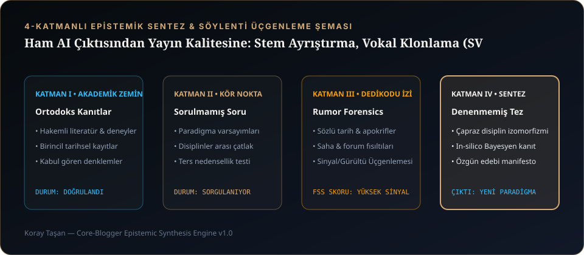

1. Neden Ham AI Çıktısı Doğrudan Spotify veya YouTube'a Yüklenmemeli?
Bir yapay zekâ müzik motorundan indirdiğiniz ham MP3 veya WAV dosyası; ne kadar etkileyici duyulursa duyulsun, teknik olarak bitmiş bir master değil, birleşik (baked-in) bir kılavuz demodur. Ham çıktılarda genellikle şu dört teknik kusur bulunur:
- 450 Hz Kutu Rezonansı (Boxiness): Vokal ile piyano/gitar orta frekanslarda üst üste biner ve çamurlu bir orta bölge oluşturur.
- Kararsız Ses Yüksekliği ve True Peak Clipping: Parçanın entegre ses yüksekliği bazen -9 LUFS'a fırlayıp dijital distorsiyon (inter-sample clipping) yaratır, bazen de -18 LUFS'ta sönük kalır.
- Jenerik Vokal Kimliği: Kendi özgün vokal renginiz (Voice DNA) yerine modelin stok ses tınısı duyulur.
İşte khrysaor ve CORE MUSIC prodüksiyonlarında ham bir fikri yayın kalitesinde (broadcast-ready) bir esere dönüştürdüğümüz 4 aşamalı stüdyo hattı:

2. Adım 1 — Cerrahi Stem Ayrıştırma (HTDemucs 24-bit/48kHz)
Miksaja müdahale edebilmek için önce vokali ve enstrümanları birbirinden cerrahi olarak ayırmamız gerekir. Bunun için hibrit zaman-frekans (Hybrid Transformer Demucs — htdemucs) mimarisini kullanıyoruz:
- 2-Stem veya 4-Stem Ayrışım: Vokali (
vocals.wav) ve altyapıyı (no_vocals.wavveya ayrı ayrıdrums, bass, other) 24-bit / 48 kHz kayıpsız PCM WAV formatında ayırıyoruz. - Sıfır-Vokal (Zero-Vocal) Kalkanı (SUSSUZ Soundtracks): Sinematik film müziklerinde insan kulağının 1–4 kHz bandındaki en ufak bir vokal hayaletine (phantom vocal bleed) bile tahammülü yoktur. Enstrümantal film müziklerinde vokal kanalını tamamen sıfırlayarak saf orkestral doku elde ediyoruz.
3. Adım 2 — Formant Koruyucu Akort (Praat PSOLA) ve Vokal Klonlama (SVC)
Ayrıştırılan kılavuz vokal üzerinde iki kritik işlem uygulanır:
- Praat PSOLA (Pitch Synchronous Overlap-Add) İle Makam/Gam Kuantizasyonu: Ham vokalde yarım komalık detone kaymalar varsa, parçanın tonuna göre (örneğin
D# minorveyaA minor) %85 güçte (strength: 0.85) perde düzeltmesi yapılır. PSOLA algoritması ses tellerinin formant yapısını ve doğal vibratoyu bozmadan, mekanik "Cher/T-Pain robotluğu" yaratmadan akordu kilitler. - Singing Voice Conversion (RVC / Seed-VC / RMVPE): Klasik metinden-konuşmaya (TTS) modelleri şarkı söyleyemez. Bunun yerine kılavuz vokalin perde eğrisini (
RMVPEpitch tracker) ve duygusal artikülasyonunu koruyarak, sesin tınısını kendi stüdyo vokal kimliğimizle (FAISS vektör indeksi veya sıfır-atışSeed-VC) değiştiriyoruz. Burada altın parametreprotect_voiceless: 0.33değeridir; bu sayede nefes alışlar ve sessiz harfler metalikleşmeden korunur.
4. Adım 3 — 6 Bant Cerrahi Vokal EQ, Opto/VCA Kompresyon ve Spectral Pocket Carving
Klonlanan ve akortlanan vokal, doğrudan altyapının üzerine konulursa miksin üzerinde "yapıştırılmış" gibi durur. Vokali altyapının içine gömmek için khrysaor 6 Noktalı Cerrahi EQ ve Çift Aşamalı Seri Kompresyon uyguluyoruz:
| Frekans Bandı | Filtre Türü & Q | Kazanç (Gain) | Akustik Fonksiyon |
|---|---|---|---|
| 80 Hz | High-Pass (18 dB/oct, Q: 0.707) | Kesim | Sub-bass çamurunu ve alt frekans uğultusunu tamamen temizler. |
| 130 – 150 Hz | Bell Peaking (Q: 1.20) | +2.0 dB ~ +2.5 dB | Göğüs Sıcaklığı (Chest Body): Bariton vokale Cihangir gecesi samimiyeti ve yakınlık katar. |
| 450 Hz | Bell Peaking (Q: 1.50) | -3.0 dB | Kutu Oyma (Boxiness Scoop): Yapay zekâ sentezinden kalan boğuk oda rezonansını yok eder. |
| 3.4 kHz | Bell Peaking (Q: 1.40) | +2.2 dB | Vokal Varlığı (Presence): Sözlerin en düşük ses seviyesinde bile net anlaşılmasını sağlar. |
| 6.2 kHz | Dynamic Notch (De-Esser, Q: 2.50) | -3.0 dB (Dinamik) | Sibilans Kontrolü: Türkçe "s, ş, ç" harflerindeki sert parlamaları yalnızca harf söylendiği anda bastırır. |
| 11.0 kHz+ | High Shelf (Q: 0.85) | +1.8 dB | Hava Bandı (Air): Vokale pahalı tüplü stüdyo mikrofonu ferahlığı kazandırır. |
Çift Aşamalı Kompresyon ve Spectral Pocket Carving
Vokali tek bir ağır kompresörle ezmek yerine, önce yavaş ve organik bir Opto Leveler (LA-2A karakteri, 2.5 dB GR) ile genel cümle dengesini kuruyor, hemen arkasına yıldırım hızında bir VCA Peak Limiter (1176 karakteri, 20 μs attack, 4:1 ratio) bağlayarak patlayan kelimeleri yakalıyoruz. Son olarak Spectral Pocket Carving tekniğiyle; vokal konuştuğu anda enstrümantal altyapının 3.4 kHz bölgesinde -1.5 dB'lik mikro bir cep açıyoruz. Böylece vokalin sesini açmadan, kelimelerin kristal netliğinde öne çıkmasını sağlıyoruz.
5. Adım 4 — EBU R128 (-14.0 LUFS / -1.0 dBTP) Mastering ve Sunum Etiği
Miks tamamlandıktan sonra parçalarımız ITU-R BS.1770-4 / EBU R128 yayın standartlarına göre masterlanır:
- Spotify, YouTube ve Apple Music Hedefi: -14.0 LUFS (±0.5 LUFS) entegre ses yüksekliği ve -1.0 dBTP (True Peak) tavan sınırı. Bu sayede şarkınız platformların ses kısma (normalization penalty) algoritmalarına çarpmaz ve AAC/Opus dönüşümünde tizleri bozulmaz.
- Uyku Atlası / Derin Odak İstisnası: Gece uykuya geçiş ve parasempatik sinir sistemi regülasyonu için ürettiğimiz Uyku Atlası projemizde ise bu hedefi bilinçli olarak -21.0 LUFS seviyesine çekiyoruz.
Stüdyonun içinde en sert matematiksel standartları (EBU R128, PSOLA, FAISS) uygularız; ancak şarkı dinleyiciyle buluştuğu anda tüm mühendislik terimlerini kapının arkasında bırakırız. YouTube açıklamalarımızda veya kapaklarımızda asla teknik jargon görmezsiniz; orada yalnızca hikâye, şarkı sözleri ve geceye bırakılan his vardır.